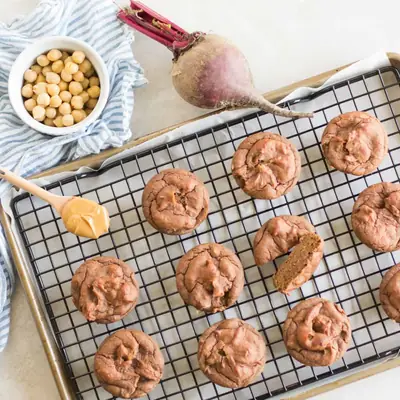

Healthy Beet Muffins for Babies

Ingredients
- 1/2 cup (50g) rolled oats
- 3 small or 1 to 1 1/2 medium (170g) cooked beetroot
- 3/4 cup (120g) no-salt-added chickpeas, rinsed and drained
- 1/2 cup (125g) smooth peanut butter, (at room temperature)
- 1 1/2 medium (170g) ripe banana
- 1 teaspoons baking powder, aluminum-free
- 1/2 teaspoon baking soda
- 1 teaspoon cinnamon
Steps
- Preheat oven to 350 degrees Fahrenheit.
- Add oats into the food processor/blender and pulse until flour-like consistency.
- Place the rest of the ingredients into the blender and blend until smooth.
- Spoon batter evenly into a muffin pan, about 1/2 full.
- Bake for 20-25 minutes, until inserted toothpick comes out clean.
- Cool in the pan for about 10 minutes. Transfer to a rack to cool completely. See storage tips in the notes section below
Recipe by Min Kwon · Kidfriendly Meals, from MJ and Hungryman. Saved here for personal use; the original has the full notes, tips and photos. Open original